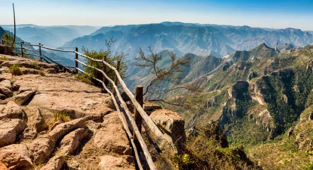

Barrancas del Cobre - Chihuahua
Las Barrancas del Cobre son el sistema de cañones más extenso y profundo que el Gran Cañón de EE. UU., ideal para el turismo de aventura, caminatas memorables y recorridos panorámicos en el tren Chepe.
Conoce más